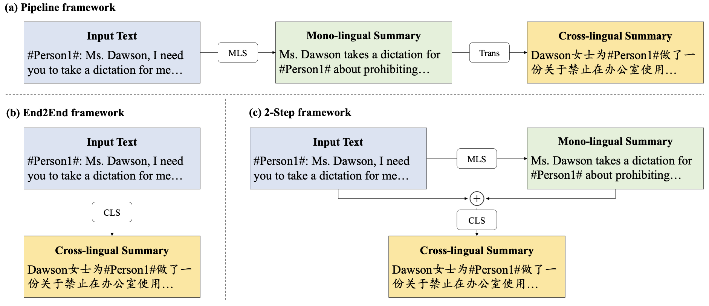

Zhou, Ej Spelt Yijie; Read Ej.
About
I am a second-year PhD student at Language Technology Lab, University of Cambridge, advised by Prof. Anna Korhonen. My legal name is Yijie and Ej is a preferred phonetic approximation.
My PhD is focused on Natural Language Processing and especially multilingual interpretability of large language models.
Before this, I did my Bachelor in Computer Science and Engineering from Zhejiang University, also member of the Chu Kochen Honors College. During my undergrad I am grateful to be advised by Prof. Yue Zhang as research intern at Westlake University. I spent one semester as an exchange student in Cornell University, where I worked as a research assistant in CommCollabTech.
I also did a research internship in Yale University under the supervision of Prof. Arman Cohan.
I was a visiting student at University of Oxford for the final year of my undergrad.
Education

|
University of Cambridge
Sept 2024 - Jun 2028(expected) Hughes Hall, Cambridge PhD in Computation Cognition and Language, Advised by Prof. Anna Korhonen |
|
Zhejiang University
Sept 2020 - Jun 2024, Hangzhou B.Eng.(Honours) in Computer Science
Grade: 3.99 / 4
Advised by Prof. Zhou Zhao |
|
|
|
Cornell University
Jan 2023 - Jun 2023, Ithaca Exchange Student
Grade: 4.082 / 4.3
|
|
|
University of Oxford
Sept 2023 - Jun 2024, Oxford St Hilda's College, visiting
Linguistics and Computer science
|
Experience
|
|
Research Intern
Apr 2023 - Oct 2023, Yale Advised by Prof. Arman Cohan Worked on bench-marking the open-domain multi-document summarization task and proposed methods to better robustness. Single first author work. [paper] |
|
|
Research Assistant
Jan 2023 - Jun 2023, Cornell In CommCollabTech Lab We designed a persuasive agent detecting factual misinformation, deployed on Telegram and Reddit. Also I was a member of Cornell Language Expansion Program. |
|
|
Research Intern
Sept 2022 - Jan 2023, Westlake University Advised by Prof. Yue Zhang We built a new benchmark for cross-lingual summarization(XLS). Our paper was accepted by ACL 2023 Long. [code] |
|
Team Leader
Aug 2021, The 9th INTEL CUP Parallel Application Challenge Achieved a 3,431% acceleration on optimizing the WBP algorithm. Internship Aug 2022 - Sept 2022, Hangzhou City Brain, IRS System maintenance. |
Publication
|  |
Revisiting Cross-Lingual Summarization: A Corpus-based Study and A New Benchmark with Improvement Annotation
|
|
|
ODSUM : New Benchmarks for Open Domain Multi-Document Summarization
|
Language et al.
Wu is my muttersprache but my education was in Mandarin. Apart from that I can speak some French, Japanese, Russian, English and German to varying degrees. I am starting to learn Polish and Portuguese this year.
It is my passion for languages that has always been a motivation for me to work on NLP.
Other stuff about me include: I am a cinema enthusiast and I was in 76-78E FESTIVAL DE CANNES;
I consider myself a Buddhist;
I trained Guqin in Westlake Qin-Society and I taught it in ZJU for one year.
गते गते पारगते पारसंगते बोधि स्वाहा